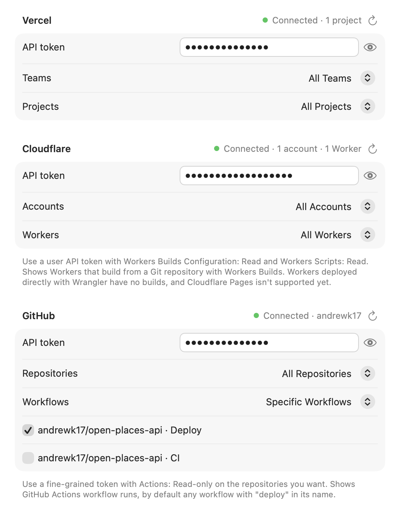

Vercel
Deployments from your personal account and your teams.
Deploylight is a menu bar app that shows what’s building, what’s live and what failed, in one list, without opening a dashboard.
Download for macOS View on GitHub
Free and open source. Requires macOS 13 or later.
Move Deploylight to your Applications folder and open it. Then paste a token for each provider you use under Preferences → Accounts. It lists what each token can see, so you choose from a list.
Deployments from your personal account and your teams.
Workers that build from a Git repository with Workers Builds. Use a user API token with Workers Builds Configuration: Read and Workers Scripts: Read. Pages isn’t supported yet.
Workflow runs, by default from any workflow with “deploy” in its name. That covers Workers you ship with wrangler deploy from a workflow. Use a fine-grained token with Actions: Read-only.

Deploylight shows Workers that build with Workers Builds, meaning the Worker is connected to a GitHub or GitLab repository in the Cloudflare dashboard. The token must be a user API token from your profile with Workers Builds Configuration: Read and Workers Scripts: Read, and it must include the Worker’s account. Cloudflare Pages projects aren’t supported yet.
Add a GitHub token with Actions: Read-only on the repository. Workflows with “deploy” in their name or file path appear by default. For any other workflow, switch Workflows to Specific Workflows in Preferences and select it.
Vercel production deployments, builds of a Cloudflare Worker’s production branch, and GitHub Actions runs on the default branch started by a push, manual dispatch, schedule, release or GitHub Pages build. Everything else shows as Preview.
Every 15 seconds, and every 2 seconds while something is building. You can change both under Preferences → General.
No. Preferences lists the teams your token can access, so you pick them from a list.
No. Deploylight is the same app under a new name and keeps your settings. Open it and it offers to move the old app to the Trash.
Deploylight is MIT-licensed, signed and notarized. Tokens are stored in the macOS Keychain, and the app talks to Vercel, Cloudflare and GitHub straight from your Mac. Nothing goes through a Deploylight server.